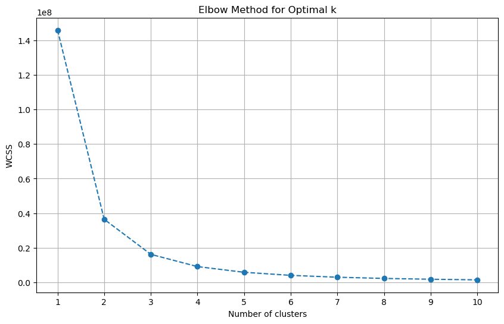
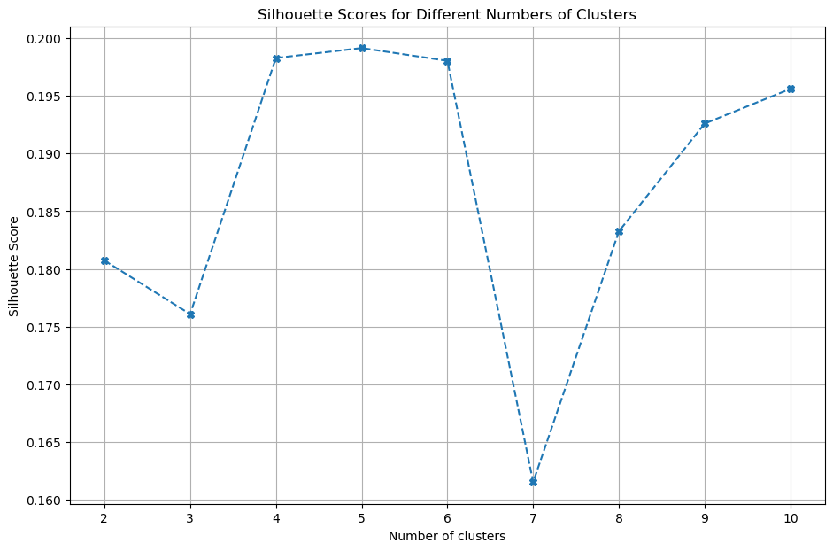
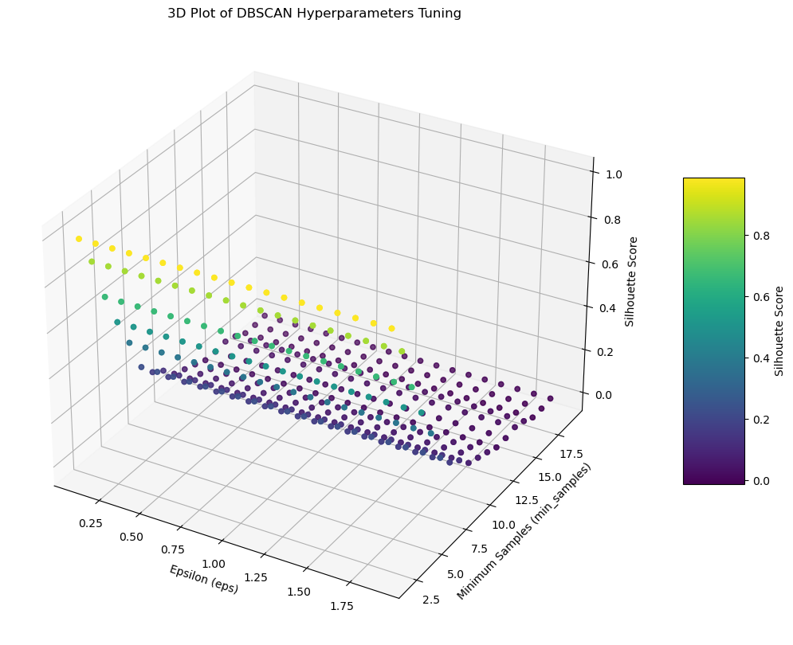
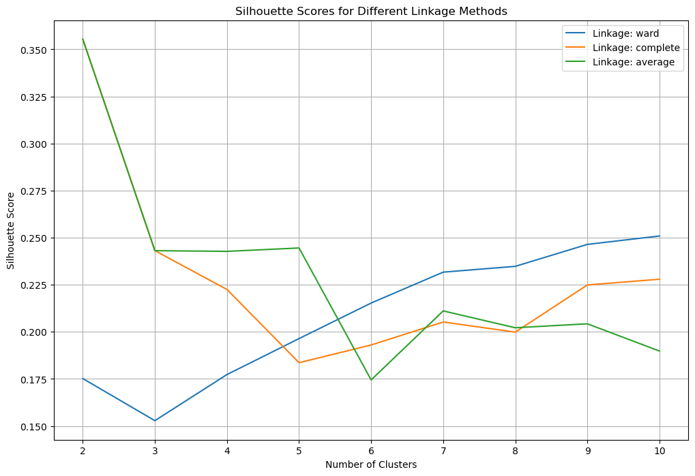
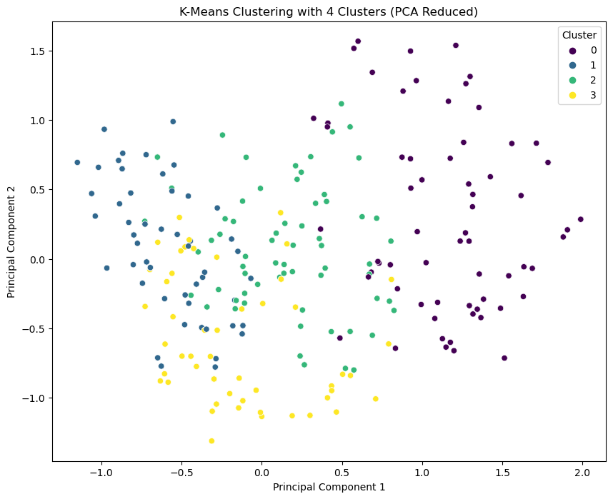
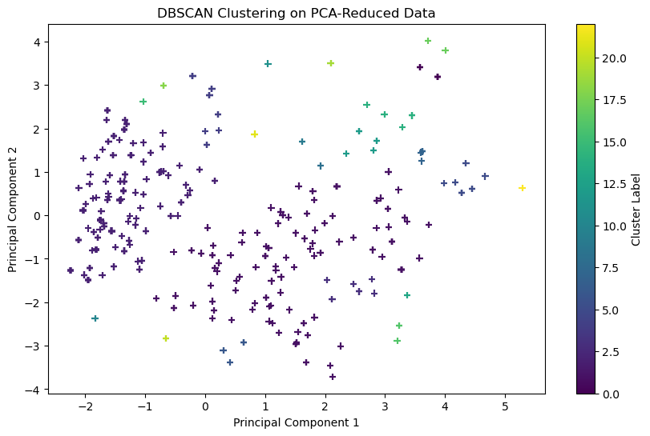
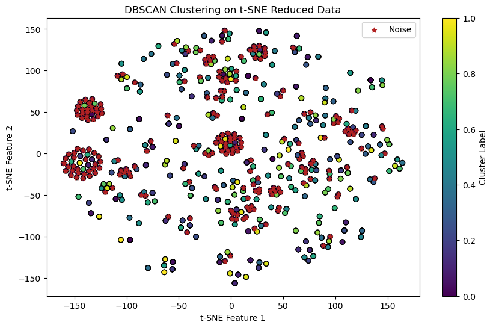
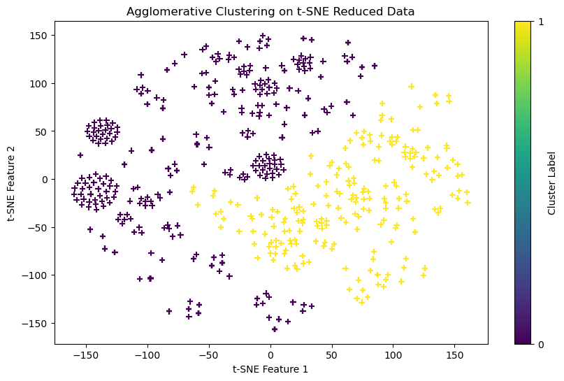
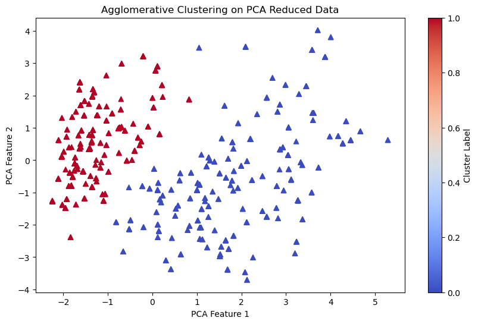

Clustering
Introduction
The feature data X in this dataset encompasses a variety of attributes that describe students in educational settings. This includes demographics (such as gender and age), educational details (like institution type and education level), and technological aspects (including internet and device type), along with factors like financial status and location. Predominantly categorical, these features vary from binary (e.g., gender) to multi-category (e.g., financial condition). The main aim of the clustering analysis is to categorize students into distinct groups based on these attributes to identify common patterns and understand how various factors, from socio-economic background to technology access, interplay and impact students’ adaptability and educational experiences.
Theory
K-Means Clustering:
Definition: K-means is an unsupervised learning approach where the algorithm processes data without specific guidance on how to handle it. Its objective is to autonomously discover patterns and connections within the data. This technique is commonly employed to categorize data into a set number of clusters by grouping data points with similar characteristics.
Example illustration: K-Means clustering organizes data into groups (clusters) based on similarities. First, we select the number of clusters and assign random ‘captains’ (centroids) to each. Individuals (data points) join the nearest cluster. Captains then move to their cluster’s center, potentially causing members to switch to closer clusters. This process repeats until no switches occur. The goal is cohesive, distinct clusters. The optimal cluster number is determined using methods like the ‘elbow’ method, ensuring groups are focused yet manageable.
DBSCAN:
Definition: DBSCAN is a clustering algorithm that groups points based on density, identifying dense regions as clusters and isolating sparse points as outliers. Unlike methods like K-means, it doesn’t require predefining the number of clusters. It relies on the idea that a point belongs to a cluster if it’s near many other points in that cluster. DBSCAN can detect clusters of varied shapes and is effective for noisy data and clusters with differing sizes and densities.
Example illustration: DBSCAN is akin to observing bird flocking behavior. Without predefining the number of flocks (clusters), it groups birds (data points) based on proximity. The algorithm starts with one bird, forming a flock if enough birds are within a set distance. The flock expands by including nearby birds. Those not close enough to any group remain alone, similar to outliers in data. DBSCAN is adept at handling flocks of varying sizes and shapes and effectively ignores isolated birds (outliers). This approach is ideal when the exact number of flocks in the data is uncertain.
Hierarchical Clustering:
Definition: Hierarchical clustering is a cluster analysis method that creates a cluster hierarchy. Data points are grouped by similarity, visualized in a dendrogram, a tree-like diagram. It has two forms: agglomerative (bottom-up, starting with individual points and merging clusters upward) and divisive (top-down, starting with one cluster and dividing downward). This technique helps reveal data structure and cluster relationships but can be demanding on computation for big datasets.
Example illustration: Hierarchical clustering is like constructing a building with blocks, where each block represents a data point. Initially, each block is a separate entity. We then group blocks based on compatibility, either by merging individual blocks into larger structures (Agglomerative method) or by splitting a large structure into smaller, cohesive units (Divisive method). The process results in a blueprint or dendrogram, showing the grouping stages. This dendrogram helps us understand the similarity levels at which blocks join, allowing us to choose the granularity of our grouping. Unlike methods like K-Means, hierarchical clustering doesn’t require setting the number of clusters in advance and visually maps how data points group together.
Model Selection Methods:
The elbow method is like achieving equilibrium on a seesaw. It involves plotting the number of clusters against their effectiveness in representing the data (often measured by variance). The goal is to find a point where adding additional clusters doesn’t markedly enhance the fit. This is analogous to the point of balance on a seesaw, where adding more weight (or clusters) won’t substantially alter the equilibrium (or data fit).
The silhouette method is similar to assessing the seating plan at a dinner party. It evaluates how well each guest (data point) fits with their table (cluster) relative to other tables. A high silhouette score indicates a guest is aptly seated, closely matching others at the same table and distinct from those at different tables. The objective is to arrange guests so they’re comfortably grouped at their tables, with a clear separation between tables. This method assists in determining the optimal number of tables (clusters) to ensure guests are neither too clustered nor too spread out.
Methods
Data Selection
- The ‘Adaptivity Level’ is the label, so it would be excluded from the clustering analysis.
Hyper-parameter tuning
K-Means:


The Elbow Method suggested optimal clusters at 3 or 4 due to a smaller decrease in WCSS beyond this point. The highest silhouette scores indicated better clustering with 4 to 6 clusters. As silhouette scores directly measure how well data points fit within their cluster compared to others, they’re often more reliable. Therefore, a cluster size of 4 might be optimal for our dataset.
DBSCAN:

From the plot, we can see that the optimal silhouette scores are generally associated with smaller values of the epsilon parameter and specific values for the minimum number of samples. When epsilon is set too high, it results in a silhouette score decrease, suggesting that the clusters are not well-defined and may be overlapping due to an overly generous neighborhood size. Conversely, setting the minimum number of samples too low appears to detrimentally affect the silhouette score, possibly because it allows more noise to be classified as part of clusters.
The best settings for eps and min_samples are those that give the highest silhouette score, indicating clear, tight clusters. The brightest yellow dots on the plot show where these scores are highest. Using these points, we can pinpoint the most effective eps and min_samples values. The Euclidean metric performs well here, likely because the data forms dense clusters with space around them, which Euclidean distance measures effectively.
Hierarchical Clustering:
In the context of Hierarchical Clustering, we try different linkage criteria along with various numbers of clusters to see how silhouette_scores vary for different combinations.
From the plot below, we can see that each linkage method suggests a different ideal count of clusters. Ward’s method suggests fewer clusters work best, while complete linkage points to three clusters as the optimal solution. Average linkage, on the other hand, shows that a number of clusters between 2 to 6 may be suitable. Based on our earlier analysis and understanding of our dataset, Ward’s method seems to be the more favorable choice.

Results
Note
You can find all the codes for Hyper-parameter tuning and final clustering results in the “clustering” folder here
For k-means method, the optimal k value is 4. And below is the result with the optimal k values. We use PCA to reduce the data to be two dimensions.
The blue and green groups have an area where they mix, showing they have some things in common or the line between them isn’t very clear. The purple and yellow groups stand out more from the others, with less mixing with the blue and green groups. There are a few spots that are away from the main part of their groups. For example, some spots in the purple group are far from the middle of the group, and these might be seen as unusual. But, using PCA (a method to simplify data) can sometimes make it harder to understand these groups based on the original details.

The DBSCAN clustering outcome following PCA reduction shows clear clusters; however, these groupings don’t align well with the expected patterns of our dataset.
Since PCA transformation is linear and focuses on preserving global structures with high variance, which might not always align with the local neighborhood relationships that DBSCAN exploits. Therefore, we should other dimensionality reduction method like t-SNE.

- The t-SNE method has made the clusters in the plot clearer. We can see distinct groups spread out on the plot. Some groups are close together, while others are looser. DBSCAN’s detection of groups with varying tightness shows it can handle complicated data well. Red stars mark the “noise” — these points don’t belong to any group. Since these noise points are all over the place, it means there are spots in the data that are not dense enough for DBSCAN to form groups with the settings used.

We will try both PCA and t-SNE for the Hierarchical Clustering.
The plot created using t-SNE shows data points organized into two distinct groups, differentiated by the colors purple and yellow. This demonstrates that Agglomerative Clustering has successfully divided the data into two separate categories. The application of t-SNE for reducing the data’s dimensions before clustering has proven beneficial, as t-SNE is designed to maintain the local relationships of data points, which seems to have revealed the inherent groupings within the data effectively.

- Implemented PCA reduction, we can visualize our final results for Hierarchical Clustering from the plot below. We can see that there are two clear clusters indicated by two colors, blue and red. The blue cluster appears more dispersed than the red cluster, which is more densely packed. Overall, it appears that PCA has been a more effective step for dimensionality reduction prior to clustering, enabling Agglomerative Clustering to identify two principal groups within the dataset.

Conclusions
All the three clustering methods above provide us with some insights of our data. Among them, I think K-means and Hierarchical Clustering performs better than DBSCAN. It indicates that our dataset has roughly spherical or globular clusters and clusters in our dataset are of similar density. Good performance by K-means or Hierarchical Clustering could also tell us that our data has few outliers or noise points, and these points do not significantly disrupt the overall clustering structure. The results also hints us that the clusters within your dataset may be relatively uniform in terms of density and size.
Our dataset includes a predefined target variable, “adaptability level,” categorizing students’ adaptability to online learning into “High,” “Medium,” or “Low” categories. Ideally, one might expect to find three clusters corresponding to these levels. However, after excluding the target variable for unsupervised clustering, the analyses consistently suggest the presence of two main clusters. This outcome aligns with insights gained during data exploration, where we observed a minimal number of students with “High adaptability” compared to a similar count of students with “Low” and “Moderate” adaptability. Hence, a clustering solution that yields two groups is plausible and reflects the distribution found in our dataset.
The dataset, rich with various feature variables, is designed to classify students into three levels of adaptability to online learning. However, the clustering analysis suggests that the available features may not sufficiently capture the nuances of student adaptability. Moreover, the dataset is composed entirely of categorical variables, many of which are binary. For instance, “financial condition,” a variable considered significant in prior research, is limited to three categories: “Mid,” “Poor,” “Rich.” The inclusion of more detailed information, such as precise family income or asset data, could potentially provide deeper insights into the factors influencing student adaptability to online learning.